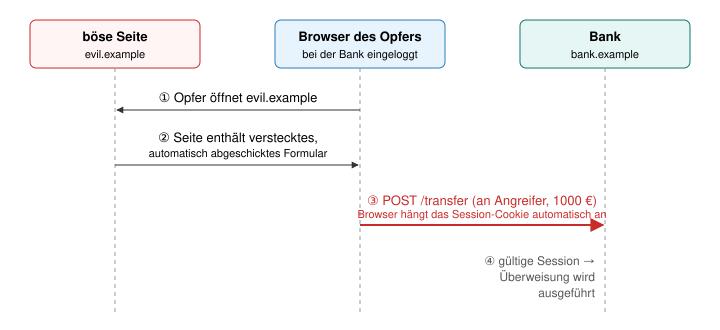

Lektion 2.6 — Teil 2: Umsetzung mit Next.js
XSS, CSRF & Clickjacking
Lernziele
- Die Same-Origin Policy erklären und begründen, warum XSS sie aushebelt
- Stored, Reflected und DOM-based XSS unterscheiden und ihre Folgen beschreiben
- Output Encoding kontextabhängig einsetzen und unsichere „Escape Hatches“ von Frameworks erkennen
- Die Content Security Policy als zusätzliche Schutzschicht erklären
- Den Ablauf eines CSRF-Angriffs beschreiben und Gegenmaßnahmen nennen
- Clickjacking erklären und verhindern
- Sichere Ausgabe in React, eine CSP mit Nonce und CSRF-Schutz für Route Handler in Next.js umsetzen
1 — Die Same-Origin Policy
Im Browser sind gleichzeitig viele Websites offen: dein Webmail, dein Online-Banking, eine
Nachrichtenseite mit Werbung. Die Same-Origin Policy (SOP) sorgt dafür, dass
JavaScript einer Origin (Lektion 1.3: Schema + Host + Port) nicht auf Inhalte
einer anderen Origin zugreifen kann: Ein Skript auf news.example kann weder das DOM
deines Webmails lesen noch die Antworten von bank.example.
Die SOP ist die wichtigste Sicherheitsgrenze im Browser. Die beiden Angriffe dieser Lektion umgehen sie auf unterschiedliche Weise:
- XSS bringt fremden Code dazu, innerhalb der angegriffenen Origin zu laufen – dort gilt die SOP nicht mehr.
- CSRF braucht gar keinen Lesezugriff: Es genügt, dass der Browser eine Anfrage an eine fremde Site abschickt und dabei automatisch Cookies anhängt.
2 — Cross-Site Scripting (XSS)
Bei Cross-Site Scripting gelingt es einem Angreifer, eigenen JavaScript-Code in eine Webseite einzuschleusen, der dann im Browser anderer Benutzer ausgeführt wird. Für den Browser stammt das Skript von der echten Website – es hat also dieselben Rechte wie der Code der Anwendung selbst.
Beispiel: Ein Forum zeigt Kommentare ungeprüft als HTML an. Ein Angreifer schreibt einen Kommentar,
der statt Text ein <script>-Element enthält – oder ein harmlos wirkendes Bild mit
einem onerror-Attribut. Jeder, der den Kommentar ansieht, führt den Code aus.
Was kann eingeschleuster Code tun?
- Cookies ohne
HttpOnlyund Tokens auslocalStoragestehlen (Lektionen 1.3, 1.4) - Im Namen des Opfers Aktionen ausführen: Nachrichten senden, Passwort oder E-Mail ändern, bestellen
- Tastatureingaben mitschneiden oder ein gefälschtes Login-Formular einblenden
- Die Seite verändern oder auf eine Phishing-Seite umleiten
Drei Arten von XSS
| Art | Wo steckt der Schadcode? | Beispiel |
|---|---|---|
| Stored XSS | dauerhaft in der Datenbank; trifft jeden, der die Seite aufruft | Kommentar, Produktbewertung, Benutzername |
| Reflected XSS | in der Anfrage (meist URL); der Server gibt ihn direkt in der Antwort zurück | Suchseite zeigt „Ergebnisse für Suchbegriff“; Opfer klickt einen präparierten Link |
| DOM-based XSS | der Server ist nicht beteiligt; Frontend-JavaScript schreibt Daten (z. B. aus der URL) unsicher ins DOM | Single-Page-App setzt einen URL-Parameter per innerHTML in die Seite |
3 — Output Encoding: der wichtigste Schutz gegen XSS
XSS ist eine Injection in den Interpreter „Browser“ (Lektion 2.5). Der Hauptschutz ist daher,
Daten beim Ausgeben so zu kodieren, dass der Browser sie als Text und nicht als
HTML oder Code interpretiert. Aus < wird dabei z. B. die HTML-Entität
< – der Browser zeigt ein Kleiner-Zeichen an, startet aber kein Element.
Die richtige Kodierung hängt vom Kontext ab, in dem die Daten landen:
| Kontext | Kodierung |
|---|---|
| Text zwischen HTML-Tags | HTML-Entities (< > & " ') |
| HTML-Attributwert | HTML-Attribut-Kodierung, Wert immer in Anführungszeichen |
| URL-Parameter | URL-Kodierung; zusätzlich nur http:/https:-Links zulassen (kein javascript:) |
| Innerhalb von JavaScript oder CSS | möglichst vermeiden; Daten z. B. über data--Attribute übergeben |
Frameworks helfen – mit Ausnahmen
Moderne Template-Engines und Frameworks (React, Angular, Vue, serverseitige Templates) kodieren ausgegebene Werte automatisch. Gefährlich wird es, wenn man diesen Schutz bewusst umgeht. Diese „Escape Hatches“ sollten im Code-Review immer auffallen:
innerHTML,outerHTML,document.writeim DOM – sicher isttextContent(JavaScript-Kurs, Lektion 2.1)dangerouslySetInnerHTMLin React[innerHTML]mitbypassSecurityTrustHtmlin Angular- Ausgaben ohne Escaping in Server-Templates (oft „raw“ oder „safe“ genannt)
Für Rich-Text (z. B. ein Editor mit Fett und Kursiv) wird das HTML mit einer bewährten Sanitizer-Bibliothek (z. B. DOMPurify) bereinigt, die nur eine Allowlist harmloser Elemente und Attribute übrig lässt. Eigene Filter mit regulären Ausdrücken sind fast immer umgehbar.
4 — Content Security Policy (CSP)
Die Content Security Policy ist ein HTTP-Response-Header, mit dem der Server dem Browser mitteilt, aus welchen Quellen Skripte, Styles, Bilder, Frames usw. geladen werden dürfen. Gelingt trotz Output Encoding eine Injection, verweigert der Browser die Ausführung des fremden Skripts – eine zweite Schutzschicht (Defense in Depth).
| Direktive | Bedeutung |
|---|---|
default-src 'self' | standardmäßig nur Ressourcen der eigenen Origin |
script-src 'nonce-…' | nur Skripte mit einem pro Antwort zufällig erzeugten Nonce-Attribut laufen; eingeschleuste Skripte kennen ihn nicht |
object-src 'none' | keine Plugins |
frame-ancestors 'none' | Seite darf nicht in Frames anderer Seiten eingebettet werden (Abschnitt 7) |
report-to | Verstöße an eine URL melden |
- Eine wirksame CSP verbietet Inline-Skripte und Event-Handler-Attribute wie
onclick(außer mit Nonce) – genau diese nutzt XSS meist. - Einführung zuerst im Modus Report-Only: Der Browser meldet Verstöße, blockiert aber noch nichts.
- Eine CSP ersetzt kein Output Encoding, sie begrenzt nur den Schaden.
5 — Cross-Site Request Forgery (CSRF)
Bei CSRF bringt eine fremde Website den Browser eines angemeldeten Benutzers dazu, eine Aktion in einer anderen Anwendung auszuführen. Der Angriff nutzt aus, dass der Browser Cookies bei Anfragen an eine Website automatisch mitschickt – egal, welche Seite die Anfrage ausgelöst hat.

Voraussetzungen für CSRF:
- Die Anwendung erkennt den Benutzer über automatisch mitgeschickte Zugangsdaten (Cookies).
- Es gibt eine zustandsändernde Aktion (Überweisung, Passwort ändern, Beitrag löschen).
- Alle Parameter der Anfrage sind für den Angreifer vorhersagbar.
Der Angreifer kann die Antwort wegen der SOP nicht lesen – das muss er auch nicht, die Aktion ist bereits ausgeführt.
Gegenmaßnahmen
| Maßnahme | Funktionsweise |
|---|---|
| SameSite-Cookies | Lax oder Strict verhindert, dass das Cookie bei Cross-Site-POSTs mitgeschickt wird (Lektion 1.3) |
| CSRF-Token | Ein zufälliger, an die Session gebundener Wert steht in jedem Formular und wird am Server geprüft; die fremde Seite kennt ihn nicht (Synchronizer Token Pattern) |
| Origin-Header prüfen | Der Browser gibt bei Anfragen die auslösende Origin an; der Server lehnt fremde Origins ab |
| GET ändert nichts | Zustandsändernde Aktionen nie per GET; sonst genügt schon ein eingebettetes Bild |
| Re-Authentication | Passwort oder MFA vor besonders kritischen Aktionen |
APIs, die ein Access Token im Authorization-Header erwarten (Lektion 1.4), sind
nicht anfällig für klassisches CSRF: Der Browser hängt diesen Header nicht automatisch an. Sobald
die Anmeldung aber über Cookies läuft – auch beim BFF-Muster –, braucht es CSRF-Schutz.
6 — XSS und CSRF im Vergleich
| XSS | CSRF | |
|---|---|---|
| Angreifer-Code läuft … | in der angegriffenen Website | auf einer fremden Website |
| Kann Antworten lesen? | ja | nein |
| Ausgenutzt wird … | fehlendes Output Encoding | automatisch mitgeschickte Cookies |
| Hauptschutz | Output Encoding, CSP | SameSite-Cookies, CSRF-Token |
Hat eine Anwendung eine XSS-Lücke, nützt der beste CSRF-Schutz nichts: Das eingeschleuste Skript läuft in der Origin, kann das CSRF-Token aus der Seite lesen und gültige Anfragen schicken.
7 — Clickjacking
Beim Clickjacking bettet eine fremde Seite die angegriffene Anwendung in einen
unsichtbaren Frame (iframe) ein und legt ihn genau über einen harmlos wirkenden
Button („Gewinn abholen!“). Der Benutzer glaubt, auf die fremde Seite zu klicken, klickt aber in
Wirklichkeit in der echten, angemeldeten Anwendung – etwa auf „Konto löschen“ oder „Zugriff erlauben“.
- Schutz: Das Einbetten in fremde Seiten verbieten – mit der CSP-Direktive
frame-ancestors 'none'(bzw.'self') oder dem älteren HeaderX-Frame-Options: DENY. - Zusätzlich hilft
SameSite: Im fremden Frame fehlen dann die Session-Cookies.
8 — Umsetzung: sichere Ausgabe in React
React kodiert alles, was in {…} ausgegeben wird, automatisch – <script> in
einem Kommentar erscheint als Text. Lücken entstehen an drei Stellen: beim bewussten Einfügen von HTML,
bei URLs in href/src und außerhalb von React (innerHTML).
npm install isomorphic-dompurifyimport DOMPurify from 'isomorphic-dompurify';
import { safeHref } from '@/lib/safe-url';
interface FlightNoteProps {
author: string;
text: string; // Klartext eines Benutzers
html: string; // Rich-Text aus dem Editor des Personals
link: string; // vom Benutzer angegebene URL
}
export default function FlightNote({ author, text, html, link }: FlightNoteProps) {
// Nur eine Allowlist harmloser Elemente bleibt übrig, Skripte und
// Event-Handler-Attribute werden entfernt
const cleanHtml = DOMPurify.sanitize(html, {
ALLOWED_TAGS: ['b', 'i', 'em', 'strong', 'p', 'ul', 'li', 'br'],
ALLOWED_ATTR: [],
});
return (
<article>
{/* JSX kodiert {author} und {text} automatisch – sicher */}
<h3>{author}</h3>
<p>{text}</p>
{/* Escape Hatch: nur mit bereinigtem HTML verwenden */}
<div dangerouslySetInnerHTML={{ __html: cleanHtml }} />
{/* href wird NICHT automatisch geprüft – javascript:-Links verhindern */}
<a href={safeHref(link)} rel="noopener noreferrer">Weitere Infos</a>
</article>
);
}/** Lässt nur http- und https-Links zu, alles andere wird zu "#". */
export function safeHref(url: string): string {
try {
const parsed = new URL(url);
return parsed.protocol === 'https:' || parsed.protocol === 'http:' ? parsed.href : '#';
} catch {
return '#'; // keine gültige absolute URL
}
}isomorphic-dompurify ist DOMPurify für Browser und Server – die Komponente funktioniert damit auch als Server Component.
9 — Umsetzung: Content Security Policy mit Nonce
Der Nonce muss für jede Antwort neu erzeugt werden – deshalb setzen wir die CSP in der Middleware aus
Lektion 2.4. Next.js erkennt den Nonce im Request-Header Content-Security-Policy und hängt
ihn automatisch an seine eigenen <script>-Elemente.
import { type NextRequest, NextResponse } from 'next/server';
// Deny by Default: Nur diese Pfade sind ohne Login erreichbar
const PUBLIC_PATHS = ['/', '/login', '/register', '/departures', '/arrivals'];
function contentSecurityPolicy(nonce: string): string {
const dev = process.env.NODE_ENV === 'development';
return [
"default-src 'self'",
// nur Skripte mit dem Nonce dieser Antwort (Dev-Server braucht eval)
`script-src 'self' 'nonce-${nonce}' 'strict-dynamic'${dev ? " 'unsafe-eval'" : ''}`,
// Inline-Styles erlaubt: Next.js und viele Bibliotheken setzen style-Attribute;
// das Risiko ist deutlich geringer als bei Skripten
"style-src 'self' 'unsafe-inline'",
"img-src 'self' data: blob:",
"object-src 'none'",
"base-uri 'self'",
"form-action 'self'",
"frame-ancestors 'none'", // kein Einbetten in fremde Seiten (Clickjacking)
].join('; ');
}
export function middleware(request: NextRequest) {
const { pathname } = request.nextUrl;
const isPublic = PUBLIC_PATHS.includes(pathname) || pathname.startsWith('/login/');
if (!isPublic && !request.cookies.has('session')) {
if (pathname.startsWith('/api/')) {
return NextResponse.json({ error: 'Nicht angemeldet' }, { status: 401 });
}
return NextResponse.redirect(new URL('/login', request.url));
}
// NEU: pro Anfrage ein zufälliger Nonce für die Content Security Policy
const nonce = Buffer.from(crypto.randomUUID()).toString('base64');
const csp = contentSecurityPolicy(nonce);
// Next.js liest den Nonce aus dem Request-Header und setzt ihn
// automatisch bei seinen eigenen Skripten
const requestHeaders = new Headers(request.headers);
requestHeaders.set('x-nonce', nonce);
requestHeaders.set('Content-Security-Policy', csp);
const response = NextResponse.next({ request: { headers: requestHeaders } });
response.headers.set('Content-Security-Policy', csp);
return response;
}
export const config = {
matcher: ['/((?!_next/static|_next/image|favicon.ico).*)'],
};'strict-dynamic': Skripte, die ein vertrauenswürdiges (mit Nonce geladenes) Skript nachlädt, sind ebenfalls erlaubt – nötig für das Nachladen von Code-Teilen.- Der Dev-Server braucht
'unsafe-eval'für Hot Reloading; in Produktion fehlt es. - Eigene Skripte erhalten den Nonce über den Header
x-nonce. - Weil jede Antwort einen anderen Nonce hat, werden Seiten dynamisch gerendert statt statisch vorab erzeugt.
import { headers } from 'next/headers';
import Script from 'next/script';
const nonce = (await headers()).get('x-nonce') ?? undefined;
// …
<Script src="/statistik.js" nonce={nonce} />Öffne nach dem Einbau die Konsole: Verstöße meldet der Browser als „Refused to execute inline script because it violates the following Content Security Policy directive …“.
10 — Umsetzung: CSRF-Schutz
Drei Schichten schützen das FlugBoard:
- SameSite=Lax am Session-Cookie (Lektion 2.1) – bei Cross-Site-POSTs fehlt das Cookie.
- Server Actions sind nur per POST aufrufbar, und Next.js vergleicht dabei automatisch den
Origin-Header mit der eigenen Adresse. Fremde Origins werden abgelehnt (erlaubte Ausnahmen überserverActions.allowedOriginsinnext.config.ts). - Route Handler prüfen das nicht automatisch. Für zustandsändernde Methoden mit Cookie-Anmeldung prüfen wir den
Origin-Header selbst:
/**
* CSRF-Schutz für Route Handler mit Cookie-Anmeldung: Der Browser schickt
* bei POST, PUT, PATCH und DELETE den Origin-Header der auslösenden Seite mit.
* Server Actions prüfen das in Next.js bereits automatisch.
*/
export function isSameOrigin(request: Request): boolean {
const origin = request.headers.get('origin');
const expected = new URL(process.env.APP_URL ?? 'http://localhost:3000').origin;
return origin === expected;
}export async function DELETE(request: Request, { params }: RouteParams) {
// NEU: zustandsändernde Anfrage von einer fremden Seite? → ablehnen
if (!isSameOrigin(request)) {
return NextResponse.json({ error: 'Ungültige Herkunft' }, { status: 403 });
}
// … weiter wie in Lektion 2.4Fehlt der Origin-Header ganz (z. B. bei curl), wird ebenfalls abgelehnt. Für Clickjacking sorgt bereits frame-ancestors 'none' in der CSP.
Häufige Fehler
Eine Single-Page-App zeigt den Benutzernamen mit innerHTML an. Ein Benutzer nennt sich so, dass sein Name ein HTML-Element mit Event-Handler enthält – Stored XSS bei allen, die seinen Namen sehen.
Für Text immer textContent bzw. die automatische Kodierung des Frameworks verwenden; Escape Hatches nur mit Sanitizer.
Ein Filter entfernt <script> aus allen Eingaben. Angreifer nutzen stattdessen Event-Handler wie onerror oder Links mit javascript:.
Beim Ausgeben kontextabhängig kodieren; zusätzlich eine CSP ohne Inline-Skripte.
Ein Beitrag wird über einen Link /posts/17/delete gelöscht. Ein Bild mit dieser Adresse auf einer fremden Seite reicht, um Beiträge angemeldeter Benutzer zu löschen.
Zustandsändernde Aktionen nur mit POST/PUT/DELETE, kombiniert mit SameSite-Cookies und CSRF-Token.
Aufgaben
Bestimme jeweils die XSS-Art und die Gegenmaßnahme: (a) Ein Produktname im Shop-Backend enthält Schadcode, der bei allen Kunden ausgeführt wird. (b) Ein Link /search?q=… mit Schadcode wird per E-Mail verschickt. (c) Eine SPA liest location.hash und schreibt den Wert ins DOM.
Öffne die DevTools (Tab Network) bei drei großen Websites und suche den Response-Header Content-Security-Policy. Welche Direktiven findest du? Erlaubt eine der Seiten Inline-Skripte?
Ergänze eine Kommentarfunktion für Flüge (Tabelle, Server Action, Anzeige). Teste mit Eingaben wie <img src=x onerror=alert(1)> und einem Link javascript:alert(1). Baue dann absichtlich eine Lücke mit dangerouslySetInnerHTML ein und beobachte, wie die CSP aus Abschnitt 9 die Ausführung trotzdem blockiert (Konsole). Entferne die Lücke wieder.
Spiele das Lernspiel Google XSS Game oder ein XSS-Lab der PortSwigger Web Security Academy. Erkläre für ein gelöstes Level, welche Ausgabe nicht kodiert war und wie die korrekte Lösung im Code aussehen müsste (in Worten).
Wissenskontrolle
Frage 1 Warum ist XSS so gefährlich, obwohl der Browser die Same-Origin Policy durchsetzt?
Frage 2 Ein Angreifer schreibt Schadcode in eine Produktbewertung, der bei jedem Besucher der Produktseite ausgeführt wird. Welche Art von XSS ist das?
Frage 3 Welche Maßnahmen schützen gegen XSS?
Mehrere Antworten sind richtig.
textContent ist Encoding auf DOM-Ebene, die CSP begrenzt den Schaden. CSRF-Token schützen gegen CSRF, nicht gegen XSS – im Gegenteil, XSS kann CSRF-Token auslesen.Frage 4 Welche Voraussetzung muss für einen klassischen CSRF-Angriff erfüllt sein?
Frage 5 Wie verhindert man, dass die eigene Anwendung für Clickjacking in einen unsichtbaren Frame eingebettet wird?
frame-ancestors 'none' oder 'self' (bzw. X-Frame-Options: DENY) verbietet das Einbetten in fremde Seiten. Die anderen Maßnahmen betreffen Cookies, SQL Injection und Tokens.Frage 6 Welche Stellen in einer React-Komponente muss man bei XSS besonders prüfen?
Mehrere Antworten sind richtig.
{…} kodiert React automatisch. dangerouslySetInnerHTML und innerHTML umgehen diesen Schutz, und eine URL wie javascript:… in href wird nicht geprüft – daher safeHref.